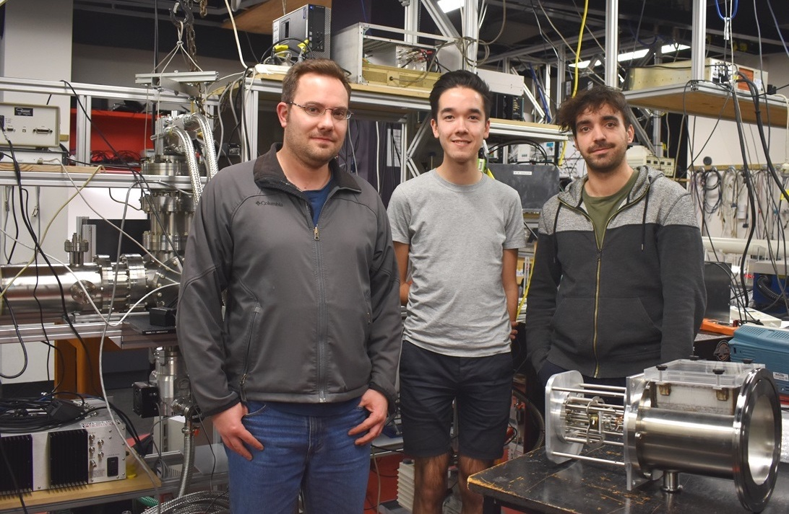

Email me at m@scholz.moe (personal) or m.scholz@ucl.ac.uk (work).
I am currently a postdoctoral research associate in Prof. Helen Fielding's group at University College London. My PhD was completed under the supervision of Prof. Evan Bieske at the University of Melbourne, Australia.
Myself (center), Dr. James Bull (left), and Dr. Eduardo Carrascosa (right) in front of the PLATIPUS apparatus under construction in the Bieske lab for cryogenic isomer-specific action spectroscopy.
My resume is available online or upon request via email. A list of publications is contained on Google Scholar and in my full (but out of date) academic CV.
I am passionate about solving physical problems by designing, constructing, and applying new technologies, both software and experimental equipment. In the lab, my research focuses on using laser spectroscopic and mass spectrometric techniques for studying, predominantly, gas-phase ions and solvated biochromophores. I am also involved in ongoing development of physical simulation software to improve our fundamental understanding of photoelectron spectroscopy of liquid samples.